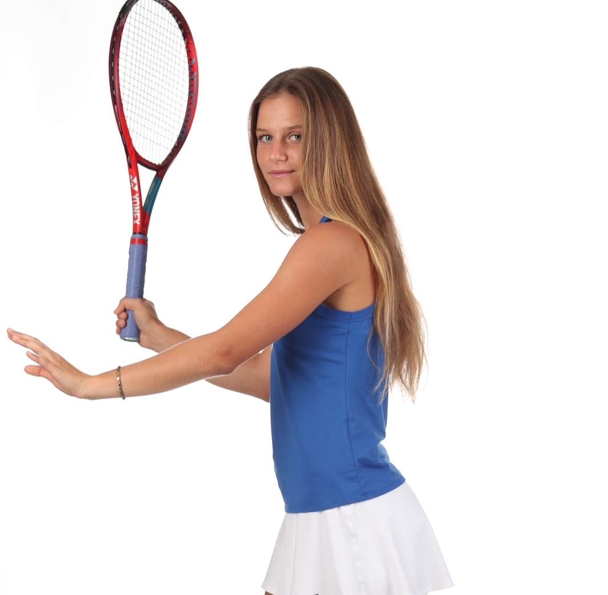

Tennis
Division I student-athlete experience, training, leadership, and competitive growth.

I am a Division I student-athlete at Syracuse University studying Finance and Information Management & Technology with a concentration in Data Analytics. My experiences in athletics and academics have shaped the way I approach leadership, discipline, and problem solving.
This site highlights my journey as a tennis player, student, and aspiring business and data professional.
Division I student-athlete experience, training, leadership, and competitive growth.
Finance, analytics, and coursework that connect business thinking with technical skills.
Examples of work in Python, R, SQL, and data analysis.
I am originally from Sarasota, Florida, and I currently attend Syracuse University as a student-athlete on the women’s tennis team. Balancing a demanding practice and travel schedule with academics has helped me grow into a disciplined and adaptable person. I am especially interested in finance, analytics, and using technical tools to solve real problems.